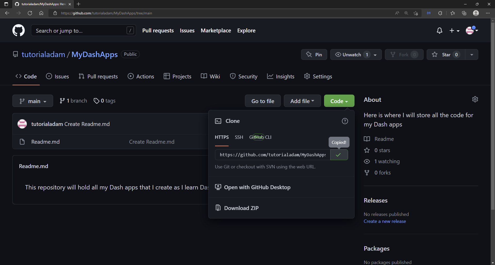
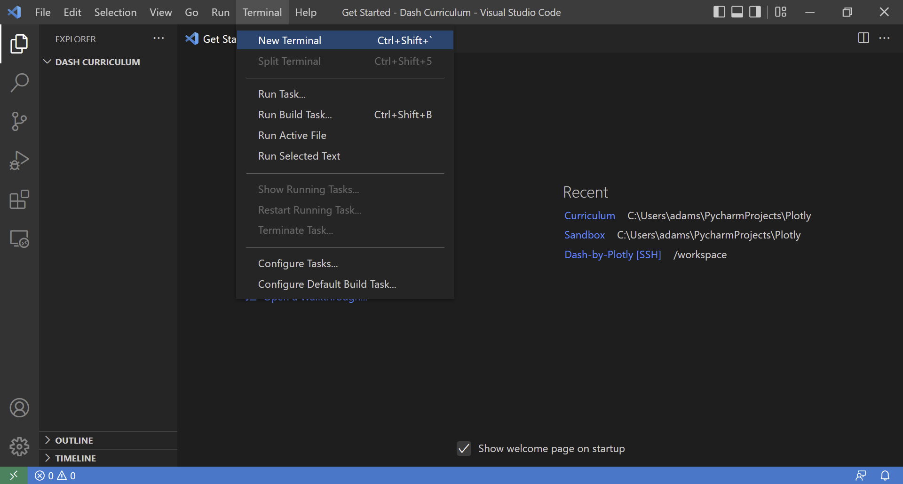
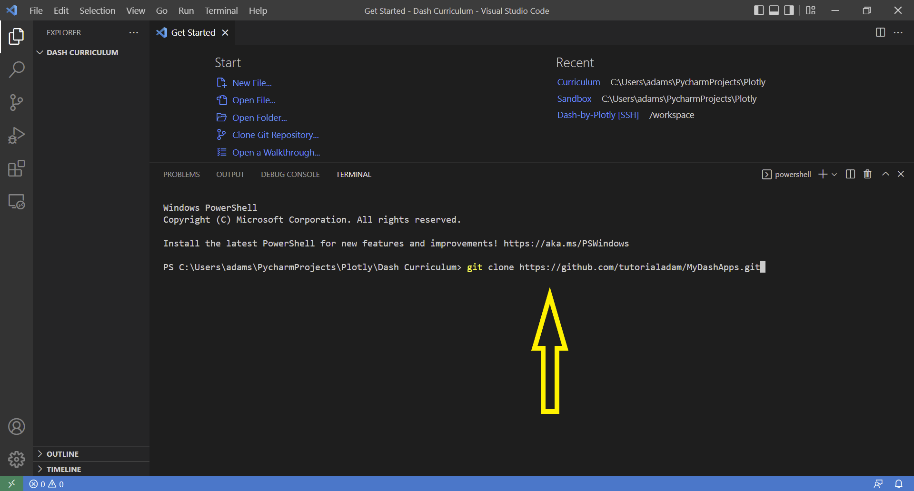
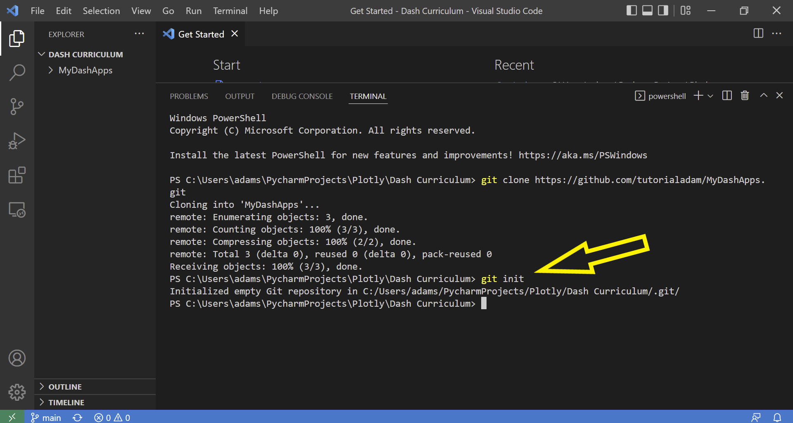
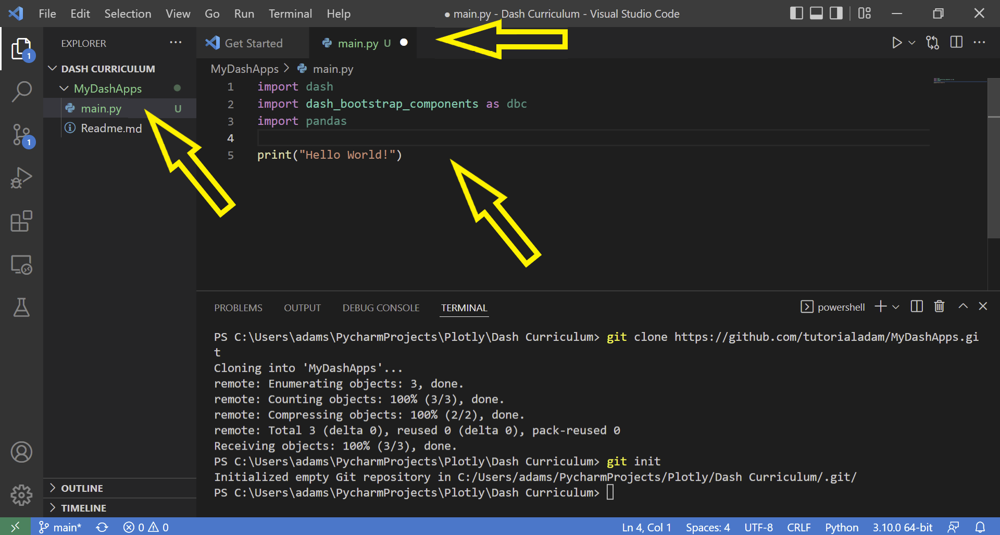
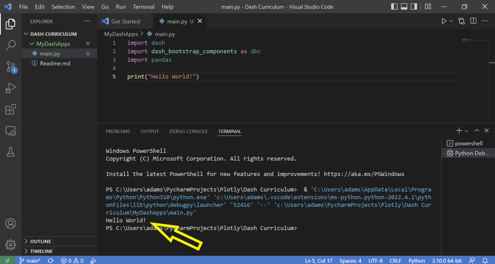
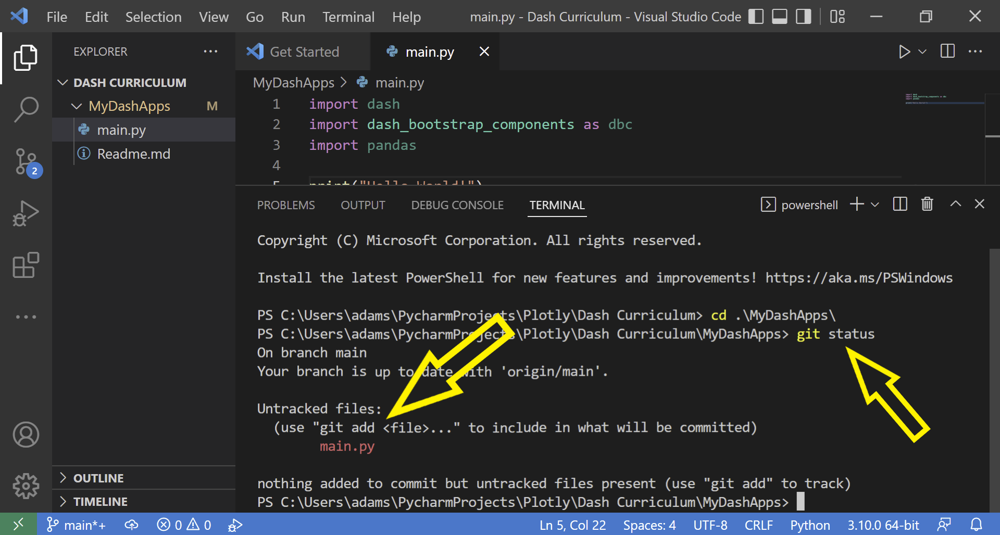
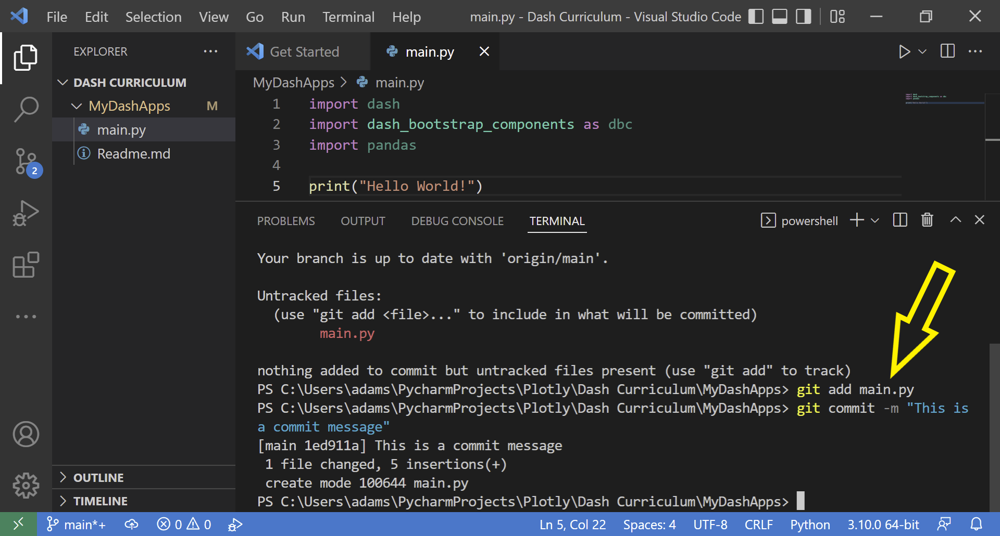
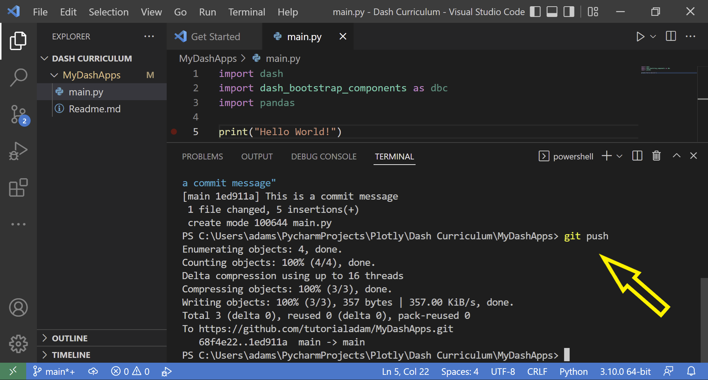

Github Installation
Contents
Github Installation¶
How to Install GitHub¶
If you don’t have a GitHub account, navigate to https://github.com/ and follow the prompts. A free account is enough for this curriculum.
After you create an account, you need to make a Public repository that will store your code:
Make sure to create a
Readme.mdfile that will describe your repository’s purpose.
Now we need to set up a secure way to talk with Github by using a personal access token:
Here is a nice summary to learn more about getting started with a gitHub account
The next step is to clone the repository from Github to our local machine. Go to your Github repository home page, click the green Code button, select HTTP, and copy the web address, as shown below with the MyDashApps repository.

Next, start VScode and open a new terminal:

and enter:
git clone *web address copied from Github*

Now that your file has been cloned to your computer, you need to initiate git by typing inside the terminal: git init:

Do we need this section below?
Press enter, enter your github account credentials (might need to set up git config here for first time)
git config --global user.name "bolajiayodeji"
git config --global user.email mailtobolaji@gmail.com
Add gif of being prompted for github credentials and entering them\
Install the necessary Python libraries¶
To enusre our Dash apps can run, you need to install a few libraries if you have not done so in the previous chapter. Go to the VScode terminal and type: pip install dash

Continue using the terminal to pip install dash-bootstrap-components and pip install pandas
Test the stack¶
Let’s make sure everything has been installed correctly. Open the newly cloned folder in VScode and create a new file called main.py. Copy and paste this code inot the file:
import dash
import dash_bootstrap_components as dbc
import pandas
print("Hello World!")

Click the Run tab located in the top section of VScode; then click Run Without Debugging to run the file. If we see Hello World! printed out in the terminal, we know the Python code is working properly with all libraries installed.

Now that we have our main.py file running, let’s use git to track the file in our repository. Go to the terminal in VScode and go into the cloned directory by typing cd .\MyDashApps\. Modify MyDashApps with the name of your repository. Then, type git status. We see that there is an Untracked file called main.py/ since we have not committed that file yet:

We’ll add that folder to the git staging area by typing: git add main.py.
Then, we need to commit the changes. Type in git commit -m "This is a commit message". Every commit needs a message and this is a good opportunity to include a short reminder of what this commit changed:

Lastly, with the file committed, it is now ready to be uploaded to our online GitHub repository by typing: git push.

If you go to github, you should now see the new main.py file in your github repository.